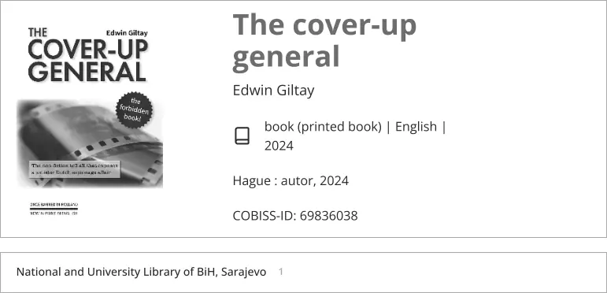

Exhibit · Catalogue entry
Catalogue entry in the National and University Library of Bosnia and Herzegovina, 2026
The passage
“Edwin Giltay · book (printed book) | English | 2024 · Hague : autor, 2024 · COBISS-ID: 69836038 · National and University Library of BiH, Sarajevo · 1 · Topics · Genocid | Srebrenica | 1992-1995” Page 1, the record fields read in the order in which they appear in the document: the author line, the material line, the imprint, the record number, then the holdings row under Availability of material and the Topics field below it. The figure 1 appears beside the library’s name in that row. The heading above the record reads ‘The cover-up general’. The document is in English; the fields are joined here with middle dots.

Why this document matters
This catalogue entry of the National and University Library of Bosnia and Herzegovina in Sarajevo shows one copy of The Cover-up General, a printed book in English from 2024, filed under the subject headings Genocid, Srebrenica and 1992-1995. The essay names this library among the collections that preserve the history the book describes.
Provenance
- Document
- Catalogue record in COBISS Plus, printed to PDF
- Title
- The cover-up general, Edwin Giltay, printed book, English, Hague: autor, 2024
- Record number
- COBISS-ID 69836038
- Held by
- National and University Library of Bosnia and Herzegovina, Sarajevo, one copy
- Date
- Saved 26 July 2026
- Subject
- Genocid, Srebrenica, 1992-1995
- Language
- English
- Web address
- plus.
cobiss. net/ cobiss/ bh/ en/ data/ cobib/ 69836038/ nubbih - Source
- PDF print at dedoofpotgeneraal.
nl/ doc/ nubbih.pdf
Cited in: the essay ‘The Ban Fell, the Book Stood’ in the chapter (9) ‘Preserved Forever’.
Exhibit page: https://
Document: https://
Last modified 26 July 2026, accessed 3 October 2026.

This page is an exhibit to the book The Cover-up General by Edwin Giltay and its accompanying website.